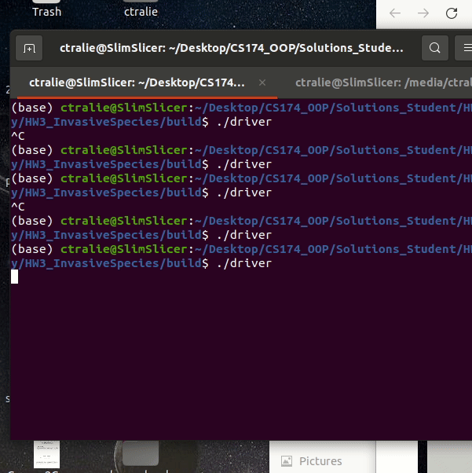
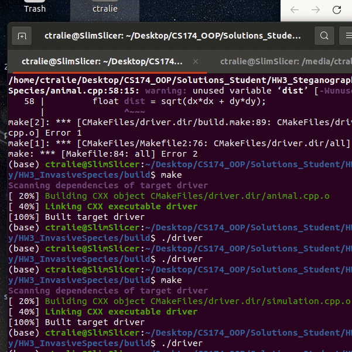
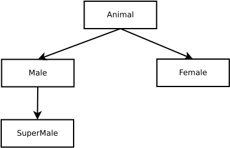

Homework 3: Invasive Species Polymorphism (70 Points)
Chris Tralie
Overview / Logistics
The purpose of this assignment is to get students practice with objects, polymorphism, and inheritance in C++ in the service of a scientific application inspired by the research of our very own Eric Takyi. Students will be building a Monte Carlo simulation of a model of invasive species undergoing reproduction. Normally, there is a roughly 50% chance that a female will give birth to a male and a 50% chance that a female will give birth to a female. But when we introduce super males into the environment, which have two Y chromosomes, then there is a 100% chance that the offspring will be a male. This leads to an interesting, non-destructive, non-violent strategy for the eradication of a population of invasive species over time. We will be building a very simple model of this using C++, though Dr. Takyi takes a very different approach by modeling differential equations for the population dynamics.
Learning Objectives
- Write reusable code with good encapsulation using objects
- Use polymorphism to store and manage a collection of heterogenous but related objects
- Create basic particle simulations on a 2D grid
- Sharpen debugging skills
Obtaining/Building/Running The Code
Watch a primer video below I created that explains how to get started
You can download the code for this assignment by using git in the terminal
git clone --recursive https://github.com/ursinus-cs174-s2023/HW3_InvasiveSpecies.git
Suggested Timeline
- By Friday 10/7, finish variables and drawing
- By Monday 10/10, finish motion, lifetimes/destruction
- By Wednesday 10/12, finish motion to neighbors (part 1 due)
- By Friday 10/21, finish males and females
- By Wednesday 10/26, finish supermales (final deadline)
What to submit
When you are finished, submit a zip file of all of your code. This should include modified versions of simulation.h, simulation.cpp, animal.h, and animal.cpp.
Part 1: Basic Particle Simulation
In the first part of this assignment, you should flesh out the Animal and Simulation classes to create a basic particle simulation with the animals. Before proceeding, take a moment to study the cpp and header files for these classes to make sure they make sense. Here are a few things to focus on:
-
The
Simulationclass is setup to contain an STL list ofAnimalobject pointers that point to the animals in the simulation. -
Each
Animalobject holds a reference back to theSimulationobject that contains it. You can use thecirclemethod of theSimulationclass to draw a dot for the animal, and you can also query parameters in the simulation like lifetime and gestation time. -
The
Simulationclass has a method calledstepwhich moves the animation one step forward. Right now, this just draws a red dot at the center of the canvas, but you will replace this with code to loop through all of the animals to take their actions and draw them.
Your Tasks
Each animal is located on a 2D grid and should have an x and y coordinate for its position on the unit square between 0 and 1. In addition, each animal should have a velocity, or a direction in which its moving, which also has two coordinates vx and vy (which are unconstrained). The image below depicts this, which the velocity (vx, vy) drawn as an arrow relative to the position (x, y):
As time elapses, the dots should move according to their velocities. The equations for motion are
\[ x \gets x + \Delta t \times vx \] \[ y \gets y + \Delta t \times vy \]
In the above image, vx and vy are both positive, so the particle will move up and to the right.
Variables / Instantiation (5 Points)
Create protected variables for the position and velocity of an animal. Randomly initialize the position coordinates to be between 0 and 1, and randomly initialize the velocity coordinates to be between -0.2 and 0.2, using the RandFloat class provided in randutils.h
Drawing (5 Points)
Create a draw method in the Animal class that draws a black dot of radius 0.01 at the animal's position, using the circle method in the Simulation class. Then, add a loop to the step method to draw all of the animals.
Before proceeding, add a few animals to the simulation in the Simulation constructor, and make sure you see that number of animals on the screen as black dots
Motion (5 Points)
Create an action method in the Animal class that moves the animal according to elapsed time in the simulation and according to its velocity.
To make the animals bounce off of the walls of the simulation, you should reset a coordinate to 1 and negate the velocity on that axis if it goes beyond 1 (and likewise, you should reset the coordinates to 0 if they go less than 0). So, for instance, if vx = 0.06 and you find that x = 1.01, then you should reset x to 1 and vx to -0.06;
Be sure to call this method from within the Simulation method step so that the animals move, in addition to being drawn. Before proceeding, make sure the black dots now move around, as shown below:
Lifetimes / Destruction (10 Points)
Add two variables to the simulation:
-
A
private floatthat stores how long it takes an animal to become an adult. -
A
private floatthat stores how long an animal lives until it dies.
dt parameter in step). If it's younger than an adult, draw it with a radius of 0.005. If it's an adult, switch to a radius of 0.01. Once it's exceeded the max lifetime, you should remove it from the simulation list so it isn't drawn anymore. Be sure to clean up memory when you remove it!
Finally, remove all animals in the destructor of the simulation to free up memory.
Below is an example with a time to adult of 5 and a lifetime of 10
Motion To Neighbors (10 Points)
Create a method in the Simulation class that accepts a pointer to animal A and which returns a pointer to animal B in the simulation which is closest to A (where B ≠ A), or NULL if A is the only animal in the simulation. Recall that the distance between two coordinate pairs (A.x, A.y) and (B.x, B.y) is
\[ d = \sqrt{(A.x-B.x)^2 + (A.y-B.y)^2} \]
We will need this in a moment to make males pursue females. For now, to test that this is working properly, call it from within the action method of the Animal class, and change course to move towards animal B if animal is greater than 0.1 units away from B. To do this, change the velocity of A to be
\[ vx = 0.1 \times (B.x - A.x)/ \sqrt{(A.x-B.x)^2 + (A.y-B.y)^2} \] \[ vy = 0.1 \times (B.y - A.y)/ \sqrt{(A.x-B.x)^2 + (A.y-B.y)^2} \]
If you've done this properly, you should get dynamics like the ones below (where this example is showing 10 animals).
Part 2: Population Dynamics
Now that we have basic motion and actions setup, we will use inheritance and polymorphism to branch off into different behaviors. The picture below shows the hierarchy of inheritance.
And the descriptions below explain how to implement each subclass.
NOTE: You won't be able to fully test Male or Female until they are both implemented, because they both depend on each other.
Females (15 Points)
Add a variable to the simulation for storing a gestation time, or the time it takes from impregnation until a baby is born. Then, create a subclass of the Animal class called Female, with a forward declaration in animal.h and an implementation in animal.cpp. In addition to the inherited variables/methods from the Animal class, a Female should have the following variables/methods:
- A private variable for storing whether the female is pregnant, a private variable for storing the amount of time pregnant, and another private variable for storing whether the baby is a male or a female.
-
A public method called
impregnatewhich accepts aboolindicating whether the child will be a male or a female. If the female is of age, you should update the above variables. Otherwise, do nothing.
Then, override the action method of the Female class to keep track of how long a female has been pregnant if she is pregnant, in addition to moving as normal (you may want to factor out your motion code into a helper method so you can reuse it here). When the gestation time has been reached, add a new animal to simulation of the appropriate gender at the current position of the female.
Finally, to indicate gender and pregnancy, you should override the draw method so that in addition to drawing the dots smaller when the female is a child and larger when she is an adult, you should use the following colors:
- rgb(251, 117, 117) if the female is not pregnant
- rgb(221, 29, 221) if the female is pregnant with a female
- rgb(255, 187, 0) if the female is pregnant with a male
Males (10 Points)
Add a variable to the simulation for "mating distance," or the distance an adult male needs to be away from an unpregnant adult female to impregnate her. Then, create a class Male that's a subclass of Animal.
First, override the draw method so that a male is drawn as rgb(28, 95, 219)
Then, override the action method so that a male moves as normal, unless he is of age and the nearest animal is an unpregnant female of age. In that case, he should head towards her (using your motion to neighbors code), and if he is within the mating distance, he should impregnate her. The offspring should be male 50% of the time and female 50% of the time.
Now you're at the stage where you can test some of the code. Below is a simulation that starts with 30 males and 30 females, with the following simulation parameters:
- adultTime = 5
- lifetime = 20
- gestationTime = 3
- mateDist = 0.01

Super Males (10 Points)
Create a class called SuperMale the inherits from Male. All of the behavior should be the same, except you should draw the dot as rgb(28, 219, 209), and it has a 100% chance of impregnating a female with a male child. For full credit in this section, I expect you to use polymorphism to factor out a method that performs a mating action on a female, so that you do not have to override the action method from the Male class. If you've done this properly, your code for the SuperMale class should be very short!